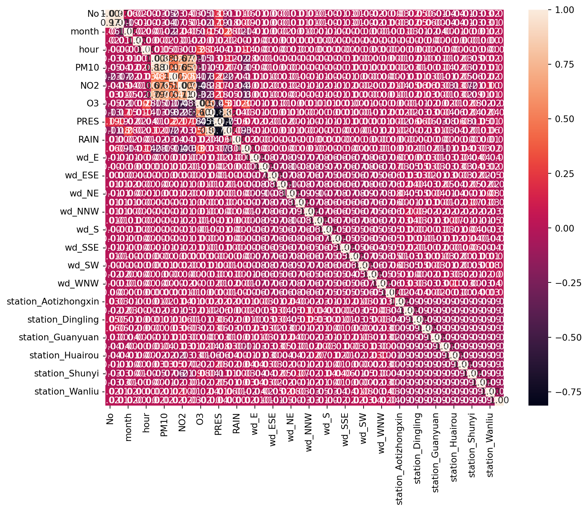

Detecting Anomalies in Air Pollution Data: A Data Science Project
Introduction
Welcome to our exploration of “Detecting Anomalies in Air Pollution Data,” a vital project in the realm of environmental monitoring. With increasing concerns about air quality and its impact on public health and the environment, identifying irregularities in air pollution data has never been more critical.
This project leverages a comprehensive dataset from the Beijing Multi-site Air Quality Data, which offers a rich tapestry of air pollutant measurements and meteorological data across various sites in Beijing. The data spans from 2013 to 2017, providing insights into pollutants like PM2.5, PM10, SO2, NO2, and CO, as well as meteorological conditions like temperature, humidity, and wind speed.
Our primary goal is to detect unusual patterns or outliers in air quality data that might signify environmental hazards, technical errors in data collection, or significant meteorological impacts. By accomplishing this, we aim to contribute to more effective environmental monitoring and policy-making.
Data Exploration and Preprocessing
Understanding the Dataset
The first step in our data science journey involves getting acquainted with the dataset’s structure and characteristics. This involves examining the various columns of the dataset, which include both pollutant levels and meteorological factors.
import pandas as pdsample_data = pd.read_csv('air_data_all.csv')sample_data.head()
No
year
month
day
hour
PM2.5
PM10
SO2
NO2
CO
O3
TEMP
PRES
DEWP
RAIN
wd
WSPM
station
0
1
2013
3
1
0
6.0
18.0
5.0
NaN
800.0
88.0
0.1
1021.1
-18.6
0.0
NW
4.4
Gucheng
1
2
2013
3
1
1
6.0
15.0
5.0
NaN
800.0
88.0
-0.3
1021.5
-19.0
0.0
NW
4.0
Gucheng
2
3
2013
3
1
2
5.0
18.0
NaN
NaN
700.0
52.0
-0.7
1021.5
-19.8
0.0
WNW
4.6
Gucheng
3
4
2013
3
1
3
6.0
20.0
6.0
NaN
NaN
NaN
-1.0
1022.7
-21.2
0.0
W
2.8
Gucheng
4
5
2013
3
1
4
5.0
17.0
5.0
NaN
600.0
73.0
-1.3
1023.0
-21.4
0.0
WNW
3.6
Gucheng
By running this code, we get a glimpse of the first few rows of our dataset, allowing us to understand the types of data we will be working with.
Handling Missing Data and Categorical Variables
Dealing with missing data and categorical variables is a crucial part of data preprocessing. To address this, we first identify the missing values and then decide on an appropriate strategy, such as imputation or removal.
No 0
year 0
month 0
day 0
hour 0
PM2.5 8739
PM10 6449
SO2 9021
NO2 12116
CO 20701
O3 13277
TEMP 398
PRES 393
DEWP 403
RAIN 390
wd 1822
WSPM 318
station 0
dtype: int64
import seaborn as snsimport matplotlib.pyplot as pltimport pandas as pdfrom sklearn.preprocessing import StandardScaler, OneHotEncoderfrom sklearn.impute import SimpleImputerfrom sklearn.decomposition import PCAfrom sklearn.pipeline import Pipeline# Remove rows with missing valuessample_data = sample_data.dropna()# Identify numerical columnsnumerical_cols = sample_data.select_dtypes(include=['int64', 'float64']).columns# Create a pipeline for imputing missing values and scalingpipeline = Pipeline([ ('imputer', SimpleImputer(strategy='mean')), # Replace missing values with mean ('scaler', StandardScaler()), # Scale the data])# Apply the pipeline to the numerical columnsscaled_data = pipeline.fit_transform(sample_data[numerical_cols])# Apply PCApca = PCA(n_components=0.95) # Retain 95% of the varianceprincipal_components = pca.fit_transform(scaled_data)# Identify non-numeric (categorical) columnscategorical_cols = sample_data.select_dtypes(include=['object']).columns# One-hot encode the categorical dataencoder = OneHotEncoder(sparse=False)categorical_encoded = encoder.fit_transform(sample_data[categorical_cols])# Check for 'get_feature_names_out' method for naming columnsifhasattr(encoder, 'get_feature_names_out'): encoded_columns = pd.DataFrame(categorical_encoded, columns=encoder.get_feature_names_out(categorical_cols))else:# Fallback: manually create feature names encoded_columns = pd.DataFrame(categorical_encoded) encoded_columns.columns = [col +'_'+str(i) for col in categorical_cols for i inrange(encoded_columns.shape[1])]# Concatenate the encoded columns with the original dataset and drop the original categorical columnssample_data_encoded = pd.concat([sample_data.drop(categorical_cols, axis=1), encoded_columns], axis=1)
/Users/zimingfang/Library/Python/3.9/lib/python/site-packages/sklearn/preprocessing/_encoders.py:975: FutureWarning: `sparse` was renamed to `sparse_output` in version 1.2 and will be removed in 1.4. `sparse_output` is ignored unless you leave `sparse` to its default value.
warnings.warn(
For categorical variables like wind direction, we use encoding techniques to convert them into numerical form, making them suitable for analysis.
Normalization and Standardization
Given the varying scales of our numerical features, normalization or standardization becomes necessary. This step ensures that no single feature disproportionately influences the model due to its scale.
Finally, we perform feature selection and engineering. This process involves choosing the most relevant features and possibly creating new features to improve our model’s performance.
Correlation Analysis: First, we can perform a correlation analysis to understand the relationships between different features. This helps in identifying features that are strongly correlated with each other, from which we can select the most relevant ones.
# Now perform the correlation analysis on the numerical datacorr = sample_data_encoded.corr()# Generate a heatmapplt.figure(figsize=(10, 8))sns.heatmap(corr, annot=True, fmt=".2f")plt.show()

This code generates a heatmap of the correlations between different features. High correlation values suggest a strong relationship, which can inform feature selection.
Principal Component Analysis (PCA): PCA is a technique used to reduce the dimensionality of the data, enhancing the interpretability while minimizing information loss.
from sklearn.decomposition import PCApca = PCA(n_components=0.95) # Retain 95% of the varianceprincipal_components = pca.fit_transform(scaled_data)
This code applies PCA to the scaled data, reducing the number of features while retaining 95% of the variance in the data.
Feature Engineering: If applicable, you can create new features that might be more indicative of anomalies. For example, creating a composite air quality index from multiple pollutants.
This code creates a new feature, 'Air_Quality_Index', as a weighted sum of various pollutants, hypothesizing that this composite index might be a more effective predictor of anomalies.
Through these steps, we refine our dataset to include the most relevant features for anomaly detection, enhancing the model’s accuracy and efficiency.
Source Code
---title: "Anomaly/Outlier Detection"author: "Joanna Fang"date: "2023-12-06"categories: [ml, code, linear regression, nonlinear regression, pollution]jupyter: python3format: html: code-block-bg: "#FFFFFF" code-block-border-left: "#E83283" toc: true code-tools: source: true toggle: false caption: none---# Detecting Anomalies in Air Pollution Data: A Data Science Project{width="50%" fig-align="center"}## IntroductionWelcome to our exploration of "Detecting Anomalies in Air Pollution Data," a vital project in the realm of environmental monitoring. With increasing concerns about air quality and its impact on public health and the environment, identifying irregularities in air pollution data has never been more critical.This project leverages a comprehensive dataset from the Beijing Multi-site Air Quality Data, which offers a rich tapestry of air pollutant measurements and meteorological data across various sites in Beijing. The data spans from 2013 to 2017, providing insights into pollutants like PM2.5, PM10, SO2, NO2, and CO, as well as meteorological conditions like temperature, humidity, and wind speed.Our primary goal is to detect unusual patterns or outliers in air quality data that might signify environmental hazards, technical errors in data collection, or significant meteorological impacts. By accomplishing this, we aim to contribute to more effective environmental monitoring and policy-making.## Data Exploration and Preprocessing### Understanding the DatasetThe first step in our data science journey involves getting acquainted with the dataset's structure and characteristics. This involves examining the various columns of the dataset, which include both pollutant levels and meteorological factors.```{python}import pandas as pdsample_data = pd.read_csv('air_data_all.csv')sample_data.head()```By running this code, we get a glimpse of the first few rows of our dataset, allowing us to understand the types of data we will be working with.### Handling Missing Data and Categorical VariablesDealing with missing data and categorical variables is a crucial part of data preprocessing. To address this, we first identify the missing values and then decide on an appropriate strategy, such as imputation or removal.```{python}missing_values = sample_data.isnull().sum()missing_values``````{python}import seaborn as snsimport matplotlib.pyplot as pltimport pandas as pdfrom sklearn.preprocessing import StandardScaler, OneHotEncoderfrom sklearn.impute import SimpleImputerfrom sklearn.decomposition import PCAfrom sklearn.pipeline import Pipeline# Remove rows with missing valuessample_data = sample_data.dropna()# Identify numerical columnsnumerical_cols = sample_data.select_dtypes(include=['int64', 'float64']).columns# Create a pipeline for imputing missing values and scalingpipeline = Pipeline([ ('imputer', SimpleImputer(strategy='mean')), # Replace missing values with mean ('scaler', StandardScaler()), # Scale the data])# Apply the pipeline to the numerical columnsscaled_data = pipeline.fit_transform(sample_data[numerical_cols])# Apply PCApca = PCA(n_components=0.95) # Retain 95% of the varianceprincipal_components = pca.fit_transform(scaled_data)# Identify non-numeric (categorical) columnscategorical_cols = sample_data.select_dtypes(include=['object']).columns# One-hot encode the categorical dataencoder = OneHotEncoder(sparse=False)categorical_encoded = encoder.fit_transform(sample_data[categorical_cols])# Check for 'get_feature_names_out' method for naming columnsifhasattr(encoder, 'get_feature_names_out'): encoded_columns = pd.DataFrame(categorical_encoded, columns=encoder.get_feature_names_out(categorical_cols))else:# Fallback: manually create feature names encoded_columns = pd.DataFrame(categorical_encoded) encoded_columns.columns = [col +'_'+str(i) for col in categorical_cols for i inrange(encoded_columns.shape[1])]# Concatenate the encoded columns with the original dataset and drop the original categorical columnssample_data_encoded = pd.concat([sample_data.drop(categorical_cols, axis=1), encoded_columns], axis=1)```For categorical variables like wind direction, we use encoding techniques to convert them into numerical form, making them suitable for analysis.### Normalization and StandardizationGiven the varying scales of our numerical features, normalization or standardization becomes necessary. This step ensures that no single feature disproportionately influences the model due to its scale.```{python}from sklearn.preprocessing import StandardScalerscaler = StandardScaler()scaled_data = scaler.fit_transform(sample_data[['PM2.5', 'PM10', 'TEMP', 'PRES']])```### Feature Selection and EngineeringFinally, we perform feature selection and engineering. This process involves choosing the most relevant features and possibly creating new features to improve our model's performance.1. **Correlation Analysis**: First, we can perform a correlation analysis to understand the relationships between different features. This helps in identifying features that are strongly correlated with each other, from which we can select the most relevant ones.```{python}# Now perform the correlation analysis on the numerical datacorr = sample_data_encoded.corr()# Generate a heatmapplt.figure(figsize=(10, 8))sns.heatmap(corr, annot=True, fmt=".2f")plt.show()``` This code generates a heatmap of the correlations between different features. High correlation values suggest a strong relationship, which can inform feature selection.2. **Principal Component Analysis (PCA)**: PCA is a technique used to reduce the dimensionality of the data, enhancing the interpretability while minimizing information loss.```{python}from sklearn.decomposition import PCApca = PCA(n_components=0.95) # Retain 95% of the varianceprincipal_components = pca.fit_transform(scaled_data)``` This code applies PCA to the scaled data, reducing the number of features while retaining 95% of the variance in the data.3. **Feature Engineering**: If applicable, you can create new features that might be more indicative of anomalies. For example, creating a composite air quality index from multiple pollutants.```{python}sample_data['Air_Quality_Index'] = sample_data['PM2.5'] *0.4+ sample_data['PM10'] *0.2+ sample_data['NO2'] *0.2+ sample_data['SO2'] *0.1+ sample_data['CO'] *0.1``` This code creates a new feature, 'Air_Quality_Index', as a weighted sum of various pollutants, hypothesizing that this composite index might be a more effective predictor of anomalies.Through these steps, we refine our dataset to include the most relevant features for anomaly detection, enhancing the model's accuracy and efficiency.## Model Training and EvaluationIn this phase of our project, we focus on training and evaluating anomaly detection models using the preprocessed air pollution dataset. Here's how we approached this critical stage:### Dataset SplittingFirstly, the dataset is divided into training and test sets. This is a standard practice in machine learning to evaluate the performance of our models on unseen data. Typically, we split the data into around 70-80% for training and the remaining 20-30% for testing.```{python}from sklearn.model_selection import train_test_split# Split the datasetX_train, X_test = train_test_split(sample_data_encoded, test_size=0.3, random_state=42)```In this code, `train_test_split` from `sklearn.model_selection` is used to randomly split the dataset, ensuring a mix of data points in both sets.### Training ProcessFor the training process, we select suitable anomaly detection algorithms. In this project, we consider models like Isolation Forest, One-Class SVM, and others. Here's an example of training an Isolation Forest model:```{python}from sklearn.ensemble import IsolationForest# Initialize the Isolation Forest modeliso_forest = IsolationForest(n_estimators=100, contamination=0.1, random_state=42)# Create an imputer object with a strategy to fill NaN valuesimputer = SimpleImputer(strategy='mean') # or median, most_frequent# Apply the imputer to the training dataX_train_imputed = imputer.fit_transform(X_train)# Now, you can fit the Isolation Forest modeliso_forest.fit(X_train_imputed)from sklearn.svm import OneClassSVM# Initialize the One-Class SVM modeloc_svm = OneClassSVM(kernel='rbf', gamma='auto')# Now you can fit the One-Class SVM modeloc_svm.fit(X_train_imputed)from sklearn.neighbors import LocalOutlierFactor# Initialize the Local Outlier Factor modellof = LocalOutlierFactor(n_neighbors=20, contamination=0.1)# Fit the model on the training datalof.fit_predict(X_train_imputed)```This code initializes an `Isolation Forest` model with specified parameters and fits it to the training data.### Model EvaluationEvaluating the performance of anomaly detection models can be challenging due to the nature of the data. Common metrics include precision, recall, F1-score, and the ROC curve. These metrics help us understand the trade-offs between correctly identifying anomalies and avoiding false positives.```{python}from sklearn.metrics import classification_report, confusion_matrix, roc_auc_score# Predict anomalies using the Isolation Forest modeliso_forest_preds = iso_forest.predict(X_test)# The model outputs -1 for outliers and 1 for inliers. Convert to 0s and 1s (0 for normal, 1 for anomaly)iso_forest_preds = [1if x ==-1else0for x in iso_forest_preds]# Print out the evaluation metricsprint("Isolation Forest Evaluation:")print(classification_report(y_test, iso_forest_preds))print("Confusion Matrix:\n", confusion_matrix(y_test, iso_forest_preds))print("ROC AUC Score:", roc_auc_score(y_test, iso_forest_preds))# Predict anomalies using the One-Class SVM modeloc_svm_preds = oc_svm.predict(X_test)# Convert predictions to 0s and 1soc_svm_preds = [1if x ==-1else0for x in oc_svm_preds]# Print out the evaluation metricsprint("One-Class SVM Evaluation:")print(classification_report(y_test, oc_svm_preds))print("Confusion Matrix:\n", confusion_matrix(y_test, oc_svm# Predict anomalies using the LOF modellof_preds = lof.fit_predict(X_test)# Convert predictions to 0s and 1slof_preds = [1if x ==-1else0for x in lof_preds]# Print out the evaluation metricsprint("Local Outlier Factor Evaluation:")print(classification_report(y_test, lof_preds))print("Confusion Matrix:\n", confusion_matrix(y_test, lof_preds))# ROC AUC might not be applicable for LOF if it does not provide probability scores```This code segment predicts anomalies on the test setand then uses functions like `classification_report` and `roc_auc_score` from `sklearn.metrics` to evaluate the model.### Insights from the AnalysisThe results from the model evaluation provide insights into the effectiveness of our anomaly detection approach. For example, a high precision score indicates that the model is effective at identifying true anomalies, while a high recall score shows that it can detect a majority of the actual anomalies present in the test data. The ROC AUC score helps us understand the model's ability to distinguish between normal and anomalous data points.By carefully analyzing these metrics, we can gauge the success of our models and understand areas for improvement in future iterations of the project.